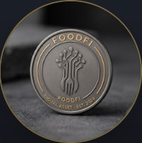

Гостям
Приложение для iOS и Android, кошелёк FDF, карта FoodFi Gold и вознаграждения Dine-to-Earn за чеки и отзывы.
FOODFI · FDF
FoodFi объединяет гостей и рестораны в одной экосистеме: приложение с кошельком FDF, карта Gold и платежи с прямыми чаевыми.

ЭКОСИСТЕМА
FoodFi проектирует единый сценарий оплаты для гостей, ресторанов и персонала.
Приложение для iOS и Android, кошелёк FDF, карта FoodFi Gold и вознаграждения Dine-to-Earn за чеки и отзывы.
Бесконтактная оплата, электронные чеки и облачная синхронизация между кассой, приложением гостя и кухней.
Гость выбирает размер чаевых в электронном чеке. По плану FoodFi, чаевые поступают в FDF прямо в кошелёк официанта.
НОЯБРЬ 2026 — 2028+
Шесть этапов развития FoodFi. Даты, показатели и интеграции отражают планы проекта.
Приложение для iOS и Android со встроенным кошельком, биометрическим входом и push-уведомлениями о расходах.
Планируется публичный раунд FDF с лимитом $2,4 млн, аудит смарт-контрактов и выпуск токенов по графику вестинга.
Личный кабинет с аналитикой и некастодиальным кошельком FDF. Целевое время проведения платежа — менее 450 мс.
Бесконтактный терминал FoodFi с целевым временем подтверждения 320 мс.
Планируются интеграции с API Binance, Bybit, OKX и Uniswap, а также сценарии обмена FDF на TON и USDT.
Цель — 50 000 ресторанов в 35 странах и присутствие более чем в 30 мегаполисах.
ДЕМОНСТРАЦИЯ
Выберите размер чаевых и посмотрите, как FoodFi покажет их в электронном чеке. Демо использует условные суммы в FDF.
Откройте бота проекта в Telegram.